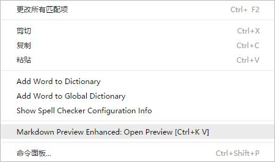
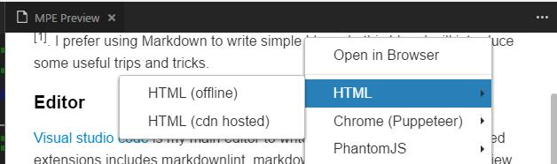

RETURN BACK|Homepage|Curriculum Vitae|Publication|Fun Projects|Blog|
Markdown Tips and Tricks I Used
Markdown is a lightweight markup language with plain text formating syntax [1]. I prefer using Markdown to write simple blogs. In this blog, I will introduce some useful trips and tricks I learned.
Editor
Visual Studio Code is my main editor to write Markdown. And the suggested extensions includes markdownlint, markdown+math (mdmath), and markdown preview enhanced. mdmath helps to render Latex math. Markdown preview enhanced provides one useful functionality of HTML export I appreciate most. The following images show how to export the HTML file in visual studio code.


Embedding images
There are two ways to add an image [3].
Markdown
Use markdown syntax to add an image.

Also you can add an local image by setting the link with the image's relative path.


HTML
<p align="center"> <img src="./learn_markdown/github_markdown.jpg" width="256" title="The First Lady of the Internet"> </p>
Math typesetting
Katex inside the mdmath allows Visual Studio Code to reanding Tex math in a markdown file.
Inline math
Einstein mass-energy equation: .
Display math
The Quadratic Formula:
The Cauchy's Integral Formula:
However, the exported HTML file via Markdown Preview Enhanced extension uses the local .css file to render Tex math, as shown in the follow codes:
<link rel="stylesheet" href="file:///C:\Users\username\.vscode\extensions\shd101wyy.markdown-preview-enhanced-0.3.2\node_modules\@shd101wyy\mume\dependencies\katex\katex.min.css">
The local katex.min.css can not be found after uploaded to the web server. To solve this problem, I uploaded the katex folder along with the exported HTML file and used a relative path.
<link rel="stylesheet" href="./katex/katex.min.css">